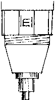

INMC News |
Christmas 1979 · Issue 5 |
| Page 6 of 38 |
|---|
|  | letters to the editor |
Dear Sir,
Many thanks for the Newsletter and Library. I have just purchased and built a Nascom 1 with B. Bug, and managed to get it going.
Now, here is a point for you:– After reading the construction book, which is easy to understand, I build the machine, so far so good. Now read the program Manual, and what do we find, a book written by people who know what they are talking about, but I am afraid it does not mean a thing to me. After about 3 days of trying we manage to get the simple programs contained going, but not a clue as to what keys to press or whatever. (It seems to me that you are supposed to know things like that). So the next thing we do we join the INMC and get the newsletter, to try and find out some of these things. What do we find, a snow plough circuit, great build it, it works, great, put the mystery program in, great it works! What next? Read the rest of the newsletter great, now all we’ve got is a whole load of questions, like, what’s a T2 or a T4 or a ZEAP etc., etc.
Now don’t think I am getting at just the newsletter writers, they know what they mean, but people like me are only just beginning to “play” with Nascom and just don’t know what things like the above are.
Don’t forget we just go and buy a Nascom off the shelf from somewhere or other and all you get are the two books with it, and one of these just is not in “non-computer” mans words.
Hope you can see what I mean, I don’t usually moan like this, you’re doing a good job, but please oh please lets have as much paperwork as you like, on T4 etc., and add ons etc., and newsletters or program manuals that the man in the street can understand, or at least tell him to press this and that and so and so will happen.
It will really help a lot, and perhaps stop some of us going hairless,
Cheers and Beers,
G.M. Hewitt
Gt Yarmouth
We are trying our best to give you all the information we have. The problem is that Mr Hewitt is an expert in electronics, but a beginner at software. The best suggestion we have is that he takes the “Mystery Program” which he has working, and writes out the hexadecimal codes, converting them to source code and then work out how it works! I know it isn’t easy, but once you have
| Page 6 of 38 |
|---|